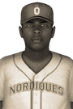

|
|
|  | More Injury Problems For Quebec's Warren Gaines Sunday, September 11th, 1932 Fans hoping to see Quebec Nordiques third baseman Warren Gaines back in action will have to be a little more patient since Gaines is expected to miss another 2-3 weeks of action. The player's rehabilitation has not gone as well as expected. Gaines is recovering from an elbow strain. In the 1932 season Gaines is hitting .236 with 1 home run. |   |